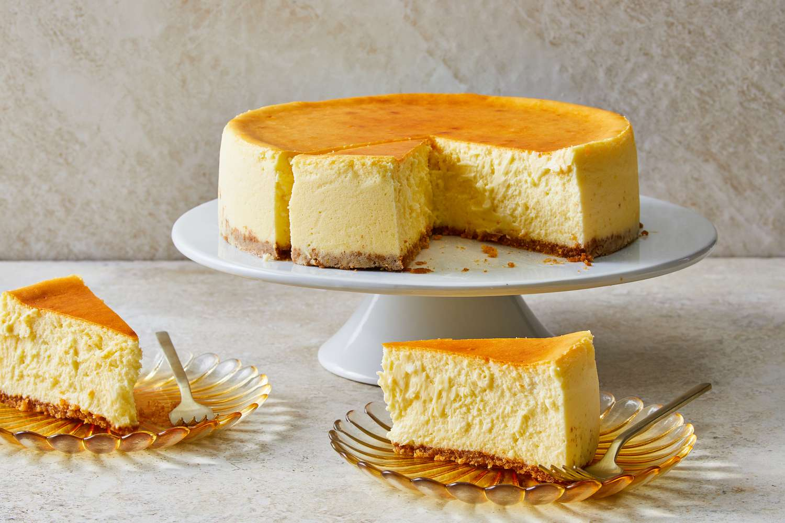

New York Cheesecake || Go Back?

New York-style cheesecake is a super simple dessert that is slightly creamier and denser than a classic cheesecake.
Ingredients
- 4 ounces graham crackers, broken into pieces
- ¼ teaspoon coarse salt
- ⅓ cup sugar
- 4 tablespoons unsalted butter, melted
- 2 ½ pounds cream cheese (five 8-ounce packages), room temperature
- 4 ounces unsalted butter, room temperature
- 8 ounces sour cream, room temperature
- 1 ¾ cups granulated sugar
- 5 large eggs, plus 2 egg yolks
- Zest of 1 lemon
- 1 teaspoon vanilla extract
Steps
- Preheat oven to 375°F with rack in lower third of oven. Butter bottom and sides of a 9-inch springform pan. Line sides of pan with 4-inch-high strips of parchment and butter parchment.
- In a food processor, pulse graham crackers with salt and sugar to fine crumbs.
- Add butter and pulse until fully incorporated.
- Press evenly into bottom of prepared springform pan and bake until crust is golden brown and set, 15 minutes. Remove from oven and transfer to wire rack to cool 10 minutes.
- In a large stand mixer fitted with the paddle attachment, beat cream cheese, butter, and sour cream with sugar until light and smooth.
- Beat in eggs one at a time until fully incorporated. Beat in remaining egg yolks, zest, and vanilla extract.
- Crisscross two long pieces of foil and place a piece of parchment on top.
- Place springform in center of foil and wrap foil tightly around bottom and sides of pan.
- Transfer to a roasting pan, pour filling into springform pan, and smooth the top. Pour boiling water into roasting pan to come halfway up the sides of the springform pan and carefully transfer to oven. Bake for 1 hour until top of cheesecake is golden brown, edges are set, and center jiggles slightly.
- Lift cheesecake from water bath, remove foil and parchment from outside of springform, and chill cheesecake in refrigerator for at least 8 hours.
- To serve, remove side of springform pan and parchment strips. Cut cheesecake with a long, thin-bladed knife.